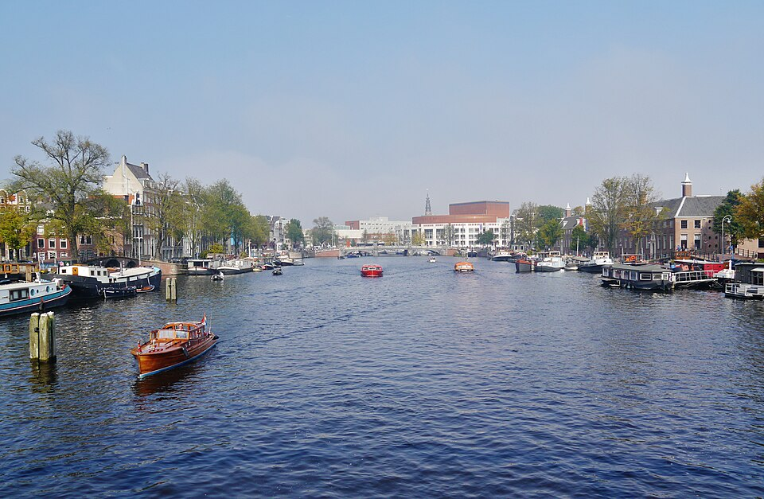
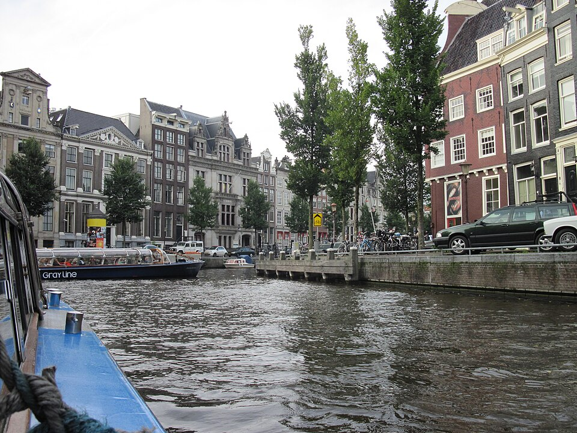
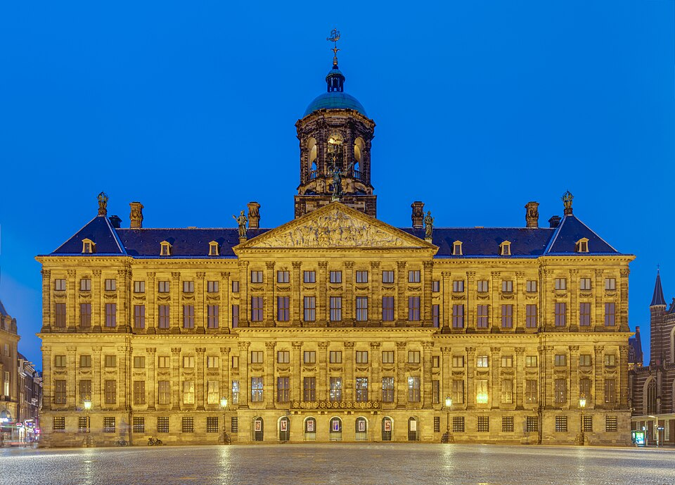

Amsterdam: A City That Learns from Water
Observations without amplification
April 4, 2026
The Amstel River

The city takes its name from this river. Not from a conquest, but from a confluence. The Amstel does not rush. It moves through clay, silt, and centuries of human adjustment. Its banks are not engineered to impress, but to endure. Boats drift at walking pace. Herons stand still. Water here is not scenery; it is infrastructure, memory, and teacher.
Grachtengordel (Canal Belt)

Seventeenth-century planning made visible. The canals were drawn with ruler and compass, yet life filled the gaps organically. Brick facades tilt just enough to show age. Bicycles rest against wrought-iron bridges without chains. Windows hold plants, not displays. The water does not reflect perfection; it reflects continuity.
Dam Square & Koninklijk Paleis

Built as a town hall, elevated to a palace, never a fortress. Its sandstone walls hold the weight of civic pride more than royal vanity. Inside, marble floors and painted ceilings speak of order. Outside, pigeons gather, footsteps echo softly, and the square remains a meeting point, not a monument. Power here is measured in stillness.
The Jordaan
Once a working-class quarter, now a network of narrow streets, hidden courtyards, and corner bakeries. Life here is measured in steps, not kilometers. Windowsills hold potted geraniums. Cobblestones are worn smooth by generations of delivery carts, bicycles, and rain. There are no grand plazas, only intimate scales where neighbors recognize each other by pace, not name.
Magere Brug at Dusk

“Skinny Bridge” is a translation, not a description. It spans the river with quiet confidence. At dusk, white lamps cast long lines on moving water. Couples pause. Cyclists slow. The bridge does not command attention; it earns it by enduring. The Amstel flows beneath, unchanged by the century that named it.
Westerkerk & Vondelpark
The bell tower has marked hours since 1638. Its sound does not announce events; it regulates rhythm. A few blocks west, Vondelpark breathes between neighborhoods. Where Rembrandt once walked, children now run on wet grass. The park does not preserve the past; it hosts the present. Continuity, not curation.
Thank you, Amsterdam.
For the quiet courtyards, the rain-slicked cobblestones, the bakers who open at dawn, the cyclists who yield to pedestrians, the water that teaches patience. You do not perform beauty. You live it.
To the 450+ visitors from the Netherlands who passed through this space —
you came in silence. You left no trace. And yet, you made it meaningful. 🌷